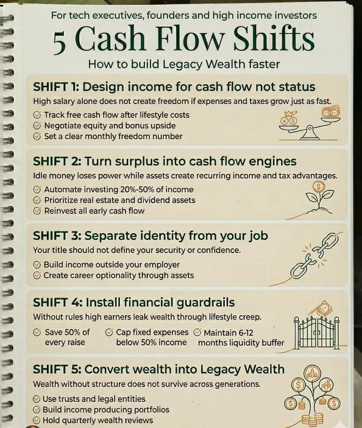

Gerimis tak kunjung reda di kawasan Ciumbuleuit, Bandung. Udara dingin menyusup dari celah jendela kaca kafe berdesain industrial klasik yang mulai berembun. Arya duduk termenung di sudut ruangan, matanya menatap kosong ke arah rintik hujan yang jatuh menghantam aspal jalanan. Di hadapannya, secangkir *single origin* Gunung Puntang telah lama kehilangan kehangatannya, menyisakan jejak pekat di bibir cangkir.
Di usianya yang menginjak tiga puluh lima tahun, Arya memiliki segalanya yang didefinisikan masyarakat sebagai 'kesuksesan'. Ia adalah seorang *Vice President* di salah satu perusahaan teknologi terbesar di Jakarta, yang kini sedang mengambil jeda akhir pekan di Bandung. Mobil SUV Eropa terparkir manis di luar, jas wol bermerek menempel pas di tubuhnya, dan portofolio kehidupannya tampak sempurna di media sosial. Namun, di balik semua atribut kemewahan itu, ada lubang hitam yang menganga di dadanya. Kelelahan yang tak berujung.
"Melamun saja, Pak VP," sebuah suara lembut namun tegas memecah lamunan Arya.
Arya menoleh. Bianca berdiri di dekat mejanya, menggoyangkan payung hitamnya yang basah. Ia mengenakan mantel *trench* berwarna abu-abu arang, penampilannya minimalis namun memancarkan keanggunan seorang wanita yang tahu persis apa yang ia inginkan dalam hidup. Bianca adalah seorang arsitek yang beralih menjadi pendiri firma desain yang sangat sukses di Bandung. Berbeda dengan Arya yang selalu sibuk memamerkan pencapaiannya, Bianca adalah antitesis dari gaya hidup mencolok.
"Duduk, Bi. Keno mana?" tanya Arya sambil memaksakan sebuah senyuman.
"Masih mencari parkir. Kau tahu sendiri bagaimana jalanan Bandung kalau sudah hujan," jawab Bianca seraya menarik kursi kayu jati di hadapan Arya. Ia menatap lekat mata sahabat lamanya itu. "Kau terlihat... redup, Ya. Gaji selangit, bonus tahunan yang bisa membeli rumah di Dago Pakar, tapi matamu menceritakan hal lain."
Arya menghela napas panjang, bersandar pada kursi. "Mungkin aku hanya lelah, Bi. Lelah berpura-pura bahwa semua ini memiliki makna."
Tak lama kemudian, Keno datang dengan napas sedikit terengah. Pria berkacamata dengan pembawaan santai itu dulunya adalah seorang *trader* kripto agresif dan investor berisiko tinggi. Ia pernah mencicipi uang dalam jumlah yang tidak masuk akal di usia dua puluhan, lalu kehilangannya dengan kecepatan yang sama. Kini, di usia pertengahan tiga puluhan, Keno telah bertransformasi menjadi seorang konsultan keuangan privat yang jauh lebih tenang dan penuh perhitungan.
"Maaf telat. Ada kecelakaan kecil di dekat ITB tadi," ujar Keno, memesan espresso ganda kepada pelayan yang lewat. Ia duduk dan langsung menatap Arya. "Jadi, ini acara reuni atau sesi terapi untuk eksekutif yang sedang mengalami krisis eksistensial?"
Arya tertawa getir. "Mungkin keduanya, Ken. Aku baru saja melihat laporan keuanganku bulan ini. Ironis. Aku menghasilkan uang lebih banyak dari yang pernah kubayangkan saat kita masih kuliah dulu. Tapi, tahukah kalian? Aku merasa lebih miskin dan lebih terikat sekarang daripada saat aku masih menjadi mahasiswa kere yang makan di warteg seberang kampus."
Bianca mengaduk teh *chamomile*-nya dengan perlahan. Suasana melankolis di luar seolah meresap ke dalam meja mereka. "Itu karena kau mendesain pendapatanmu untuk status, Ya. Bukan untuk arus kas."
Arya menatap Bianca, mengernyitkan dahi. "Apa maksudmu? Bukankah wajar jika karir naik, gaya hidup juga menyesuaikan?"
Bianca mengeluarkan sebuah buku catatan kecil dari tas kulitnya. Di sela-sela halamannya, terdapat sebuah pamflet atau catatan yang pernah ia simpan. Ia meletakkannya di atas meja, seolah itu adalah peta harta karun yang selama ini Arya abaikan.

"Ini adalah kesalahan pertama dari banyak eksekutif teknologi, pendiri *startup*, dan investor berpendapatan tinggi," Bianca mulai menjelaskan, suaranya tenang, mengalun selaras dengan rintik hujan di luar. "**Shift pertama: Desain pendapatan untuk arus kas, bukan status.** Kau pikir gaji tinggimu menciptakan kebebasan? Tidak, Ya. Kebebasan tidak tercipta jika pengeluaran dan pajakmu tumbuh sama cepatnya dengan gajimu. Kau membeli mobil Eropa itu, menyicil apartemen mewah di Sudirman, membeli jam tangan *hyped*. Semua itu demi status. Coba jujur, berapa *free cash flow* atau arus kas bebasmu setiap bulan setelah dipotong biaya gaya hidupmu itu?"
Arya terdiam. Kata-kata Bianca menghujam tepat di ulu hatinya. Ia ingat bagaimana bulan lalu ia harus menggunakan kartu kredit untuk menutupi biaya perbaikan mobilnya karena uang tunainya sudah habis untuk membayar cicilan dan keanggotaan klub golf yang bahkan jarang ia kunjungi.
"Nol," gumam Arya, suaranya nyaris tenggelam oleh alunan musik *jazz* yang mengalun pelan dari pengeras suara kafe. "Bahkan terkadang minus."
Keno mengangguk, sorot matanya menyiratkan simpati yang mendalam. "Aku pernah berada di sana, Ya. Kau ingat tahun 2021? Saat portofolioku meledak? Aku merasa seperti raja dunia. Uang menganggur di rekening bankku, dan aku pikir itu adalah kekuatan. Aku salah besar."
Keno menunjuk poin kedua pada catatan Bianca. "**Shift kedua: Ubah surplus menjadi mesin arus kas.** Uang yang menganggur itu kehilangan kekuatannya karena inflasi, sementara aset akan menciptakan pendapatan berulang dan keuntungan pajak. Dulu, aku tidak mengotomatisasi investasiku. Aku tidak memprioritaskan *real estate* atau aset dividen. Aku biarkan uangku diam, atau lebih buruk, kugunakan untuk berspekulasi. Kalau saja dulu aku menginvestasikan 20% hingga 50% pendapatanku ke dalam mesin kas yang nyata, aku tidak perlu memulai semuanya dari awal dua tahun lalu."
Udara di dalam kafe terasa semakin pekat. Kenangan akan masa lalu, keputusan-keputusan bodoh, dan ego masa muda seakan menguar dari cangkir kopi mereka. Bandung sore itu menjadi saksi bisu dari penyesalan-penyesalan yang tak terucapkan.
"Lalu, apa yang harus kulakukan?" tanya Arya, nada suaranya kini terdengar putus asa. Kepangkatan VP yang disandangnya terasa bagai rantai emas yang mencekik lehernya. "Setiap hari aku bangun dengan ketakutan. Industri teknologi sedang tidak stabil. Ada *layoff* di mana-mana. Bagaimana jika besok namaku ada dalam daftar pemotongan karyawan?"
"Itulah masalah terbesarmu, Ya," sahut Bianca lembut. Ia mencondongkan tubuhnya ke depan, menatap Arya dengan tatapan seorang kakak yang mencoba menyelamatkan adiknya dari tepi jurang. "**Shift ketiga: Pisahkan identitas dari pekerjaanmu.**"
Bianca mengambil jeda sejenak, membiarkan kalimat itu meresap. "Jabatanmu seharusnya tidak mendefinisikan keamanan atau kepercayaan dirimu. Saat ini, jika seseorang bertanya siapa Arya, jawabanmu pasti 'VP di Perusahaan X'. Kau telah meleburkan jiwamu ke dalam entitas bisnis yang sama sekali tidak memiliki loyalitas emosional padamu. Jika mereka memecatmu besok, kau bukan hanya kehilangan pendapatan, kau kehilangan dirimu sendiri."
"Kita mengorbankan waktu yang tak tergantikan untuk mengumpulkan hal-hal yang dapat digantikan. Kita memakai gelar seolah-olah itu adalah nama yang diberikan Tuhan, padahal itu hanyalah baris teks dalam kontrak yang bisa dirobek kapan saja."
Mata Arya mulai memanas. Realitas itu terlalu menyakitkan, terlalu telanjang. Ia telah mengorbankan hubungannya, akhir pekannya, kesehatannya, hanya untuk mempertahankan gelar tersebut. Ia membangun rumah di atas tanah sewaan.
"Kau harus mulai membangun pendapatan di luar majikanmu," lanjut Bianca. "Ciptakan opsi karir melalui aset. Ketika asetmu menghasilkan cukup uang untuk menutupi kebutuhan dasarmu, pekerjaanmu berubah dari 'kewajiban untuk bertahan hidup' menjadi 'pilihan'. Itulah kebebasan yang sesungguhnya."
"Teorinya terdengar indah, Bi," Arya tersenyum masam. "Tapi setiap kali aku mendapat promosi atau kenaikan gaji, selalu ada kebutuhan baru yang muncul. Iuran lingkungan elit, liburan eksklusif untuk menjaga *networking*..."
"Itu yang dinamakan *lifestyle creep*, inflasi gaya hidup," potong Keno cepat. "Itu penyakit mematikan bagi para *high earner*. Itulah kenapa kau butuh **Shift keempat: Pasang pagar pembatas finansial**."
Keno menyesap espressonya yang telah tandas setengah. "Tanpa aturan, uang sebanyak apa pun akan bocor. Kau harus kejam pada dirimu sendiri, Ya. Simpan 50% dari setiap kenaikan gajimu. Jangan disentuh. Batasi pengeluaran tetapmu di bawah 50% dari pendapatanmu. Dan yang terpenting, jaga *buffer* likuiditas untuk 6 hingga 12 bulan ke depan. Pagar pembatas ini bukan untuk mengekangmu, melainkan untuk melindungimu dari dirimu sendiri."
Arya meresapi kata-kata sahabatnya. Selama ini, ia hidup tanpa rem. Ia mengendarai mobil dengan kecepatan penuh di jalan yang licin tanpa memakai sabuk pengaman. Satu slip kecil, satu email pemutusan hubungan kerja, dan semuanya akan hancur lebur.
"Dan jika aku berhasil melakukan semua itu?" tanya Arya, pandangannya beralih ke luar jendela, melihat jalanan Braga yang kini basah dan memantulkan lampu-lampu jalanan berwarna kuning keemasan. Sebuah pemandangan melankolis yang selalu membuatnya merasa kecil di tengah besarnya dunia. "Untuk apa semua ini pada akhirnya?"
Bianca tersenyum tipis, sebuah senyum yang mengandung kebijaksanaan dari seseorang yang telah selesai berperang dengan egonya sendiri. "**Shift kelima, Ya. Mengubah kekayaan menjadi Kekayaan Warisan (Legacy Wealth).**"
"Kekayaan tanpa struktur tidak akan bertahan melintasi generasi," jelas Bianca. "Tujuan akhirnya bukanlah tentang seberapa banyak uang yang bisa kau kumpulkan di rekeningmu untuk kau pamerkan saat ini. Ini tentang membangun sesuatu yang bertahan lebih lama dari usiamu. Menggunakan perwalian dan entitas hukum yang tepat. Membangun portofolio yang terus menghasilkan pendapatan. Dan secara rutin, mengadakan tinjauan kekayaan kuartalan, bukan sekadar melihat mutasi harian dengan rasa cemas."
Bianca menatap ke arah luar. "Aku melakukan ini semua bukan untuk diriku sendiri lagi. Aku membangun ini untuk masa depan, agar anak-anakku kelak tidak perlu mengorbankan jiwa mereka pada perusahaan hanya untuk bisa makan. Agar mereka bisa memilih pekerjaan karena *passion*, bukan karena keputusasaan."
Kafe itu semakin sepi ketika malam semakin larut. Hujan di luar perlahan mereda, menyisakan kabut tipis yang turun menyelimuti pepohonan di sepanjang jalan Ciumbuleuit. Udara terasa lebih bersih, seolah hujan baru saja mencuci dosa-dosa kota.
Ketiga sahabat itu terdiam dalam keheningan yang nyaman. Arya merasa ada sesuatu yang bergeser di dalam dirinya. Beban berat yang selama ini ia pikul di pundaknya—tuntutan untuk selalu terlihat sukses, ketakutan akan kehilangan status, kecemasan finansial yang tersembunyi—perlahan mulai terurai.
Ia menyadari bahwa kesuksesan sejati bukanlah seberapa tinggi jabatannya di gedung pencakar langit Jakarta, melainkan seberapa besar kendali yang ia miliki atas waktunya sendiri. Ia telah menghabiskan satu dekade terakhir mendesain hidupnya untuk dipajang di etalase, lupa untuk membangun fondasi yang kokoh di belakangnya.
"Terima kasih," ucap Arya lirih, memecah keheningan. "Kurasa, aku punya banyak pekerjaan rumah malam ini. Sudah saatnya membatalkan beberapa langganan konyol dan menghubungi pialang untuk hal yang lebih substansial."
Keno menepuk bahu Arya pelan. "Lebih baik terlambat menyadarinya di usia tiga puluh lima, daripada terbangun di usia lima puluh dan menyadari bahwa kau telah bekerja keras sepanjang hidup hanya untuk membuat bank dan perusahaan pembuat barang mewah menjadi kaya."
Bianca mengangguk setuju. Ia merapikan mantelnya dan bersiap untuk berdiri. "Waktu adalah satu-satunya aset yang tidak bisa kau beli kembali, Ya. Berhenti menukarnya dengan hal-hal yang tidak memberimu kebebasan."
Mereka melangkah keluar dari kafe menuju udara malam Bandung yang dingin dan basah. Arya berjalan menuju mobil SUV Eropanya, namun kali ini, ia tidak merasakan kebanggaan yang biasa ia rasakan saat menggenggam kuncinya. Ia hanya melihat bongkahan logam yang menyusut nilainya setiap detik, sebuah liabilitas yang menyamar sebagai aset.
Sambil menatap lampu kota yang berkelap-kelip dari kejauhan, Arya berjanji pada dirinya sendiri. Ini adalah malam terakhir ia mendefinisikan dirinya melalui sebuah kartu nama. Besok, ia akan mulai membangun kebebasan. Perlahan, sunyi, namun pasti.
Kabut malam Kota Kembang memeluknya, tak lagi membawa rasa sepi, melainkan sebuah pelukan perpisahan pada masa lalunya, dan sapaan hening untuk langkah barunya menuju kemerdekaan yang sesungguhnya.